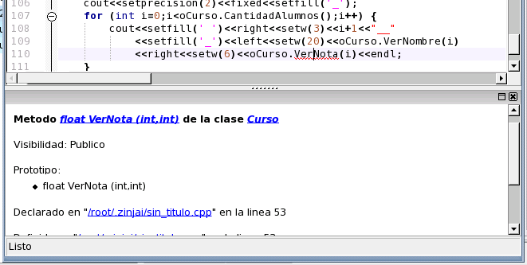
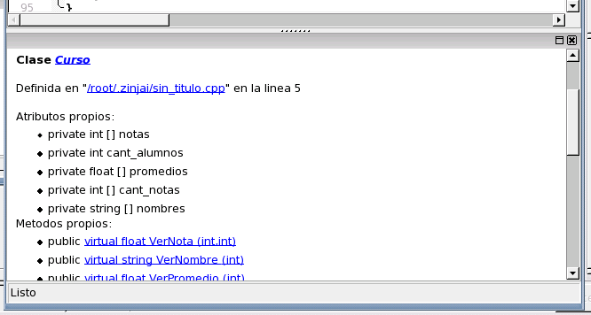
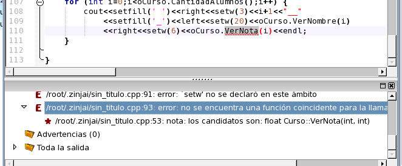

Finalmente, resta solucionar el error de la línea 110. En esta línea se realiza una llamada a "VerNota" pasándole un parámetro entero cuando esta función en realidad recibe dos. Esto se puede comprobar colocando el cursor sobre "VerNota" y presionando Shift+F1.

Ahora la ayuda rápida muestra un resúmen de las funciones, clases o metodos que coincidan con este nombre, informando en este caso que ver nota es un método de la clase Curso que recibe dos enteros como argumentos. Haga click sobre el enlace "Curso" en la primera línea de esta ayuda para visualizar la ayuda rápida correspondiente a la clase curso. Observe el resúmen de métodos que esta clase implementa.

De acuerdo a la lógica del problema, podemos concluir que el método que en realidad deberíamos llamar en lugar de "VerNota" es "VerPromedio". Reemplace el nombre del método en el código. Puede notar que el compilador arroja junto con el mensaje de error una lista de prototipos de posibles funciones o metodos candidatos, la cual puede visualizar haciendo click sobre el mas correspondiente al error en el árbol de errores. ZinjaI oculta inicialmente esta y otras informaciones para mostrar una lista de errores limpia y concreta (ver Análisis de la salida del compilador).

Volver... Continuar...